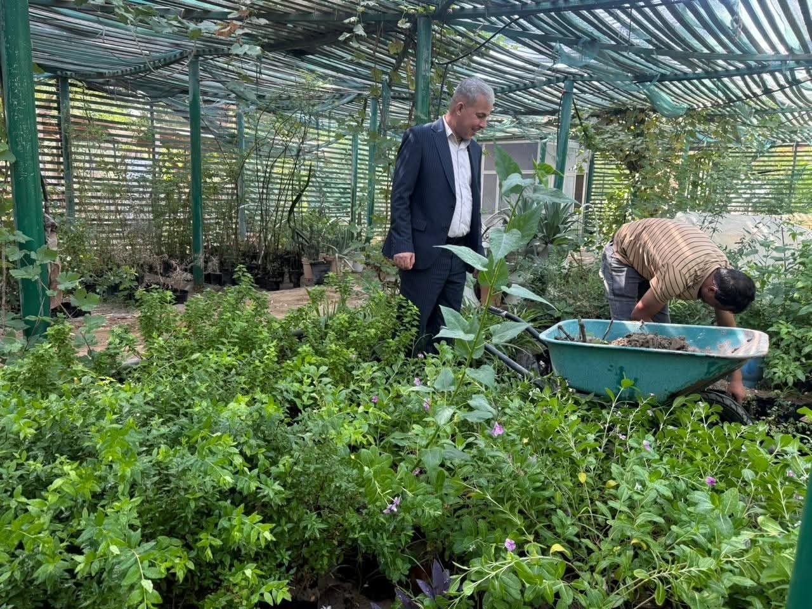
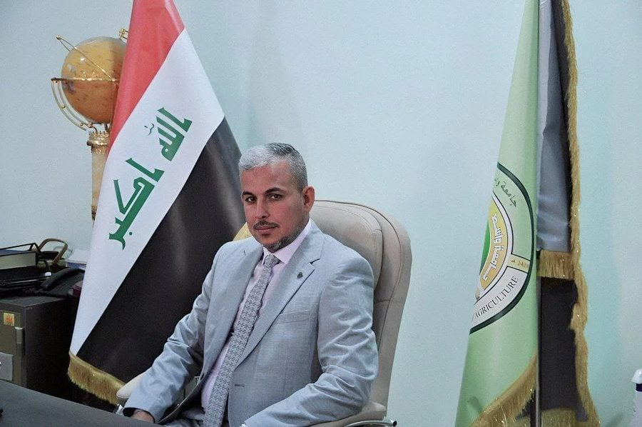

Five scientific departments, undergraduate and graduate programs, and applied research and agricultural extension connected to the fields and livelihoods of Wasit Governorate.

As in established colleges of agriculture, our work rests on three integrated pillars.
Bachelor's programs in five scientific specializations, and graduate (Master's) study in several of them, with theory and lab curricula updated each semester.
Applied research in crop and animal production and in soil and water health, supervised by faculty with graduate-student participation.
Carrying research findings to farmers and livestock producers in Wasit through field workshops and direct technical consultation.
Each department spans a four-year Bachelor's program, dedicated laboratories, and a teaching staff.
Processing, storage and quality evaluation of food products — from dairy and meat to sugar, dates and food additives.
Department pageSoil fertility and classification, irrigation and drainage, land reclamation, and remote sensing and its agricultural applications.
Department pageProduction of cereal, legume, forage and medicinal/pharmaceutical crops, variety improvement and plant genetics, and modern harvest technology.
Department pageControl of insect pests, plant diseases and weeds, pesticide safety, and modern techniques for early detection.
Department pageBreeding and improvement of livestock and poultry, their nutrition and health, and efficient dairy and meat production.
Department pageSee the current central-admission requirements and application stages.
Admissions
“At the College of Agriculture we aim to build a generation of specialists able to serve Wasit's agricultural sector, through rigorous teaching and research directed at real agricultural challenges.”
The dean's statement currently published dates to 2020 — an updated text is needed from the Dean's Office. The sentence above is a provisional illustrative phrasing, not a translation of an official statement.
Note: the photo shown here comes from the project owner's uploaded photos with no explicit caption naming its subject; it is placed here on the assumption that it shows the Dean, as it is the only formal portrait among the uploaded images. Please confirm this is indeed a photo of Dean Prof. Dr. Hakim Sultan Abd Al-Rikabi before approving this page, or supply the correct photo.
This section is meant to be updated weekly with one or two items from the Media Division.
This prototype currently has no live news feed. The last item actually published on the live site dates to July 2025.
This section needs an events calendar (dates, venues, times) from the Media Division.
Suggested cadence: one or two posts a week, each with a 1200×800 photo and 150-300 words of text.